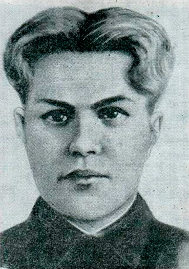

Куриленко Владимир Тимофеевич - партизан-подрывник партизанского отряда Смоленской области.
Родился 25 декабря 1924 года в деревне Бабиничи Витебского района Витебской области Белоруссии в семье служащего. Русский. Окончил среднюю школу № 1 города Велижа Смоленской области. Жил в деревне Поречено Смоленского района Смоленской области.
Вскоре после начала Великой Отечественной войны, с июля 1941 года комсомолец Владимир Куриленко - партизан-подрывник отряда Шлапакова И.Р., действующего на территории оккупированной гитлеровскими войсками Смоленской области. За 10 месяцев отважный юноша подорвал несколько автомашин, 2 орудия, пустил под откос 4 вражеских эшелона с живой силой и боевой техникой.
13 мая 1942 года, при возвращении с боевого задания, В.Т. Куриленко был смертельно ранен и на следующий день, по пути в отряд, умер. Был похоронен в деревне Выставка (Демидовский район Смоленской области), а в мае 1947 года перезахоронен в сквере Памяти Героев в Смоленске.
Указом Президиума Верховного Совета СССР от 1 сентября 1942 года за образцовое выполнение боевых заданий командования в тылу врага и проявленные мужество и героизм в боях с немецко-фашистскими захватчиками партизану-подрывнику Куриленко Владимиру Тимофеевичу посмертно присвоено звание Героя Советского Союза.
Награждён орденом Ленина (01.09.1942; посмертно).
Памятник Герою установлен в Смоленске. Его именем названы улицы в городах Смоленск, Велиж и Рославль, буксир Министерства морского флота. На зданиях школ в городе Велиж и селе Каспля Смоленской области, где учился Герой, установлены мемориальные доски. На месте гибели у деревни Саленки Смоленского района Смоленской области - обелиск.